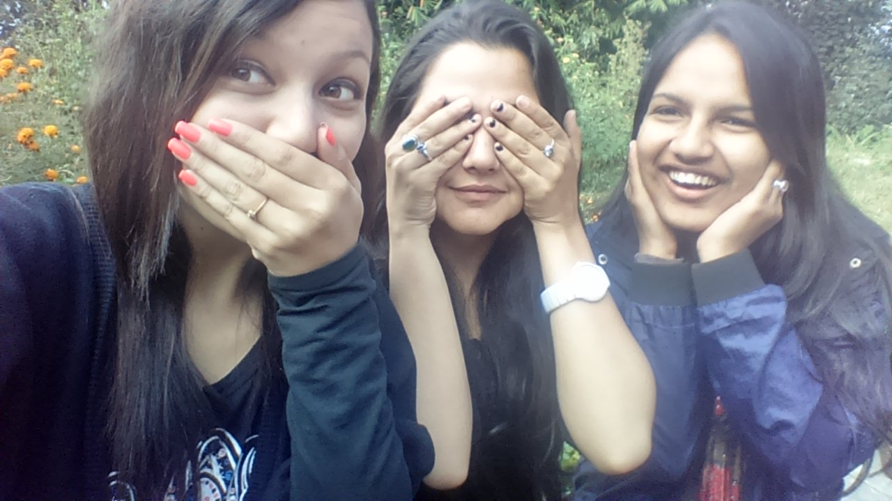

We are witnessing a monumental shift in how media is consumed and monetized. The traditional gatekeepers of entertainment and information are being bypassed by independent creators. This is the Creator Economy, and its second phase—what many call Creator Economy 2.0—is transforming individuals into scalable, multi-million dollar businesses.

From Influencer to Entrepreneur
In the early days, "influencers" primarily made money through brand sponsorships and ad revenue sharing. Today, creators are launching their own products, subscription communities, SaaS tools, and venture funds. The focus has shifted from mere reach (follower count) to deep engagement and ownership of the audience.
- Direct Monetization: Platforms like Patreon, Substack, and OnlyFans allow creators to get paid directly by their biggest fans.
- Creator-Led Brands: Think MrBeast's Feastables or Emma Chamberlain's Chamberlain Coffee. Creators are leveraging their audience to disrupt traditional retail.
- Community Ownership: Moving audiences off rented platforms (like TikTok or Instagram) to owned platforms (like Discord or email newsletters).
"The next great media companies will not be built by corporations. They will be built by individuals who know how to cultivate and monetize attention."
The Power of Authenticity
Why do consumers trust a solo YouTuber over a massive broadcasting network? Authenticity. Creators build parasocial relationships with their audience. The raw, unfiltered, and deeply personal nature of their content creates a bond of trust that traditional brands struggle to replicate. In this economy, being genuine is the highest form of marketing.
Niche is the New Mass Market
You no longer need millions of followers to build a sustainable business. The concept of "1,000 True Fans" (coined by Kevin Kelly) is more relevant than ever. Creators who cater to highly specific, passionate niches—whether it's mechanical keyboards, sustainable urban farming, or obscure indie games—can build highly profitable businesses through direct fan support.
The Takeaway for Brands
For traditional businesses, the rise of the Creator Economy means rethinking partnerships. It's no longer just about paying for a shoutout; it's about co-creating, integrating deeply into the creator's narrative, and leveraging their authentic connection with the community. Brands must act as enablers rather than just advertisers.